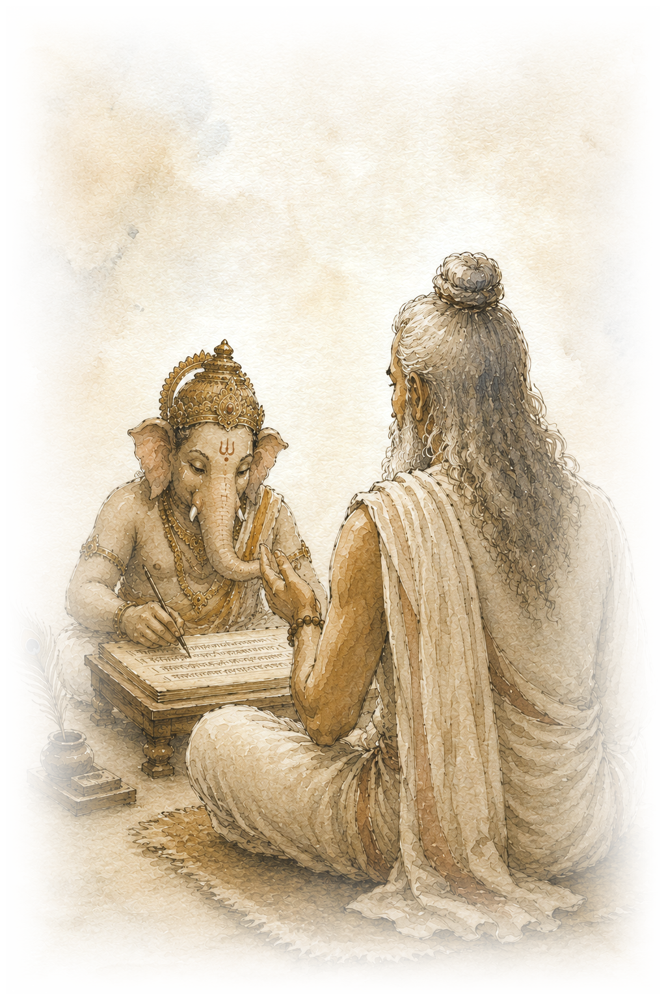

महाभारतम्
Mahābhārata · a retelling

Vyāsa · Gaṇeśa
As it was first told — spoken, and set down into form.
Itihāsa Hall
Further episodes are being held in reserve until they're ready.
महाभारतम्
↓Mahābhārata · a retelling
Vyāsa · Gaṇeśa
As it was first told — spoken, and set down into form.
Itihāsa Hall
Further episodes are being held in reserve until they're ready.